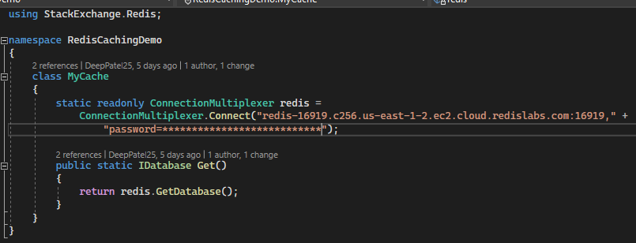
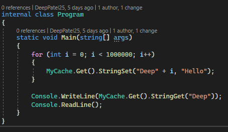
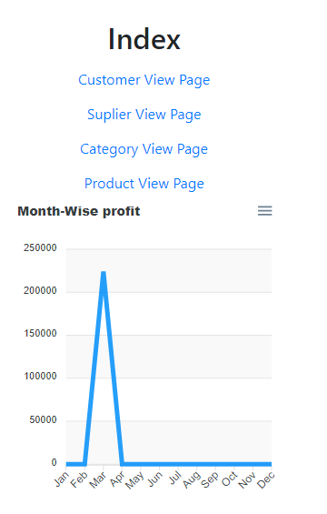
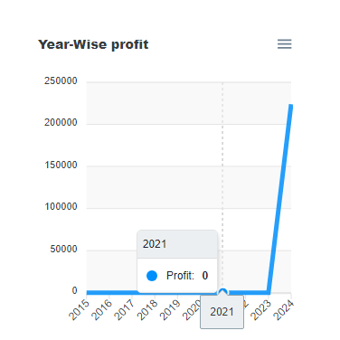
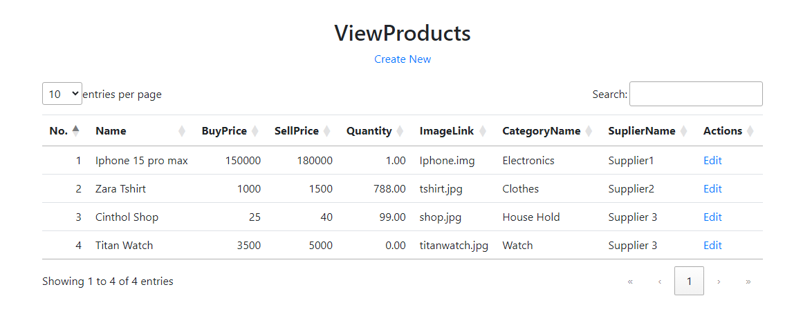
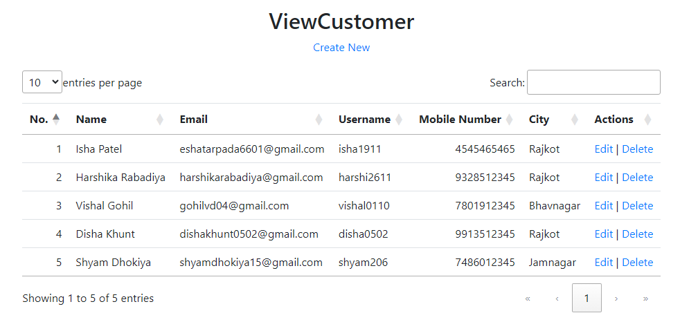

Week 9
Section 1 :- Radis Caching
In C# (version 8 to 10), Redis caching is utilized to enhance performance by storing frequently accessed data in-memory using the Redis data store. This improves application responsiveness and reduces the need to fetch data from slower storage systems. The StackExchange.Redis library is commonly employed to interact with Redis in C#. Developers use caching strategies, such as setting expiration times and employing distributed caching, to efficiently manage data in Redis, resulting in optimized application performance and reduced load on backend systems.
 Section 2 :- Cookie Decryptor
I have developed a C# program that initially retrieves cookie data from the local storage of our PCs, storing it as a list of cookies with key, host, and encrypted values. The encrypted values are obtained from the local storage, and to decrypt them, a master key is stored in the local storage's local state. This master key is protected, requiring the use of the ProtectData.Unprotect method for decryption.
Once the master key is unencrypted, all necessary values for decrypting a cookie's encrypted value become available. The decryption process utilizes the AesGcm algorithm, extracting the nonce, ciphertext, and tag values from the encrypted cookie data. With these values in hand, the algorithm decrypts the cookie's value, which is then stored in the cookie's "value" property. Finally, all the processed data is saved to a data.json file for further use.
Cookie Decryptor Code
using Microsoft.Data.Sqlite;
using Newtonsoft.Json;
using Newtonsoft.Json.Linq;
using System.Security.Cryptography;
using System.Text;
namespace CookieGetterFromDatabase
{
public class Cookie
{
public string? Host_Key { get; set; }
public string? Name { get; set; }
public byte[]? Encrypted_Value { get; set; }
public string? Value { get; set; }
}
public class Program
{
private static string _CookiesDBFilePath =
"C:\\Users\\deep.p\\AppData\\Local\\Google\\Chrome\\User Data\\Default\\Network\\Cookies";
private static string _LocalStateFilePath =
"C:\\Users\\deep.p\\AppData\\Local\\Google\\Chrome\\User Data\\Local State";
static void Main()
{
List<Cookie> lstCookie = GetAllCookies();
byte[] masterKey = GetKeyFromLocalState();
DecryptAllCookies(ref lstCookie, masterKey);
File.WriteAllText("C:\\Users\\Deep.P\\Downloads\\test\\data.json",
JsonConvert.SerializeObject(lstCookie, Formatting.Indented));
}
private static void DecryptAllCookies(ref List<Cookie> lstCookie, byte[] masterKey)
{
AesGcm aes = new AesGcm(masterKey);
foreach (Cookie cookie in lstCookie)
{
if (cookie.Encrypted_Value?.Length < 16)
{
continue;
}
byte[] nonce = cookie.Encrypted_Value[3..15];
byte[] ciphertext = cookie.Encrypted_Value[15..(cookie.Encrypted_Value.Length - 16)];
byte[] tag = cookie.Encrypted_Value[
(cookie.Encrypted_Value.Length - 16)..(cookie.Encrypted_Value.Length)];
byte[] resultBytes = new byte[ciphertext.Length];
aes.Decrypt(nonce, ciphertext, tag, resultBytes);
cookie.Value = Encoding.UTF8.GetString(resultBytes);
}
}
private static byte[] GetKeyFromLocalState()
{
string localState = File.ReadAllText(_LocalStateFilePath);
JObject localStateJson = JObject.Parse(localState);
string encyKeyTxt = localStateJson["os_crypt"]["encrypted_key"].ToString();
byte[] encKeyWithPrefix = Convert.FromBase64String(encyKeyTxt);
byte[] encKeyByte = encKeyWithPrefix[5..];
byte[] masterKey = ProtectedData.Unprotect(encKeyByte, null, DataProtectionScope.CurrentUser);
return masterKey;
}
private static List<Cookie> GetAllCookies()
{
List<Cookie> lstCookie = new List<Cookie>();
using (SqliteConnection connection = new SqliteConnection($"Data Source={_CookiesDBFilePath}"))
{
connection.Open();
SqliteCommand sqliteCommand = connection.CreateCommand();
sqliteCommand.CommandText = "SELECT * FROM cookies;";
using (SqliteDataReader reader = sqliteCommand.ExecuteReader())
{
while (reader.Read())
{
lstCookie.Add(new Cookie()
{
Host_Key = reader["host_key"] as string ?? string.Empty,
Name = reader["name"] as string ?? string.Empty,
Encrypted_Value = reader["encrypted_value"] as byte[]
});
}
}
connection.Close();
}
return lstCookie;
}
}
}
Section 3 :- Whatsapp Indexed Storage
Indexed Storage in the context of web development usually refers to IndexedDB, a low-level API for storing large amounts of structured data, including files, in a user's browser. It provides a way for web applications to create, read, navigate, and write to a user's local database.
IndexedDB operates asynchronously and is commonly used for offline data storage and caching. For a service like WhatsApp Web, Indexed Storage could be used to store various types of user data, such as chat messages, media files, and settings. The IndexedDB API allows developers to create multiple object stores, each containing key-value pairs, to organize and manage different types of data.
Section 4 :- Online Shopping App for API Calls
I have developed an MVC application featuring a user-friendly GUI that serves as a comprehensive interface for various APIs. This application provides a practical understanding of API functionalities by incorporating forms for essential operations such as data retrieval and posting.
Users can seamlessly interact with APIs for products, customers, suppliers, and carts, mirroring the operations of a real-life e-commerce platform. The interface facilitates the input of user values, demonstrating how data is collected and transmitted to the API server. This interactive platform enhances comprehension of API workflows and promotes a hands-on learning experience in the realm of online commerce applications.
   Section 5 :- Unit Testing
In Visual Studio 2022, for unit testing with xUnit, developers often leverage the FakeItEasy mocking library and FluentAssertions for expressive assertions. With xUnit projects, they create test methods annotated with [Fact].
Using FakeItEasy, developers generate mock objects to isolate units of code, mimicking external dependencies. FluentAssertions then allows for clear and concise verification of expected outcomes. Setup, Act, and Assert phases are seamlessly structured within xUnit's conventions. The combination of FakeItEasy and FluentAssertions in xUnit testing provides a powerful and readable approach to ensure the correctness of individual units in software development.
Unit Testing Code
using FakeItEasy;
using FluentAssertions;
using FluentAssertions.Extensions;
using NetworkService.DNS;
using NetworkService.Services;
using System.Net.NetworkInformation;
namespace NetworkService.Tests.ServicesTests
{
public class NetworkServicePingTests
{
private readonly NetworkServicePing _ping;
private readonly IDNS _dns;
public NetworkServicePingTests()
{
// Dependencies
_dns = A.Fake<IDNS>();
// SUT
_ping = new NetworkServicePing(_dns);
}
[Fact]
public void NetworkServicePing_PingTest_ReturnString()
{
A.CallTo(() => _dns.SendDNS()).Returns(true);
var result = _ping.PingTest();
result.Should().Be("Success: Ping sent.");
result.Should().Contain("Success", Exactly.Once());
}
[Theory]
[InlineData(1, 2, 3)]
[InlineData(2, 3, 5)]
public void NetworkServicePing_PingAdd_ReturnInt(int a, int b, int c)
{
var result = _ping.PingAdd(a, b);
result.Should().Be(c);
result.Should().BeGreaterThanOrEqualTo(0);
}
[Fact]
public void NetworkServicePing_LastPingDate_ReturnDate()
{
var result = _ping.LastPingDate();
result.Should().BeAfter(1.January(2010));
result.Should().BeBefore(1.January(2025));
}
[Fact]
public void NetworkServicePing_GetPingOptions_RetursObject()
{
// Arrange
var expectedResult = new PingOptions()
{
DontFragment = true,
Ttl = 1
};
// Act
var result = _ping.GetPingOptions();
// Assert
result.Should().BeOfType<PingOptions>();
result.Should().BeEquivalentTo(expectedResult);
result.Ttl.Should().Be(1);
}
[Fact]
public void NetworkServicePing_MostRecentPings_RetursObject()
{
// Arrange
var expectedResult = new PingOptions()
{
DontFragment = true,
Ttl = 1
};
// Act
var result = _ping.MostRecentPings();
// Assert
// result.Should().BeOfType<IEnumerable<PingOptions>>();
result.Should().ContainEquivalentOf(expectedResult);
result.Should().Contain(x => x.DontFragment == true);
}
}
}
Section 6 :- Apex Chart
ApexCharts is a modern JavaScript charting library used for creating interactive and visually appealing charts in web applications. It supports a wide range of chart types, including line, bar, area, pie, and more. With a simple and declarative syntax, developers can customize charts extensively, adjusting colors, labels, tooltips, and animations.
ApexCharts is built on top of the popular SVG (Scalable Vector Graphics) format, ensuring responsiveness and compatibility across various devices. It seamlessly integrates with popular front-end frameworks like Angular, React, and Vue. The library offers dynamic updates and real-time capabilities, making it suitable for data-driven and dynamic applications. ApexCharts has gained popularity for its simplicity, versatility, and aesthetic appeal in creating interactive visualizations.
Section 7 :- Data Annotations & ModelState
In C#, Data Annotations are attributes applied to model properties to define validation rules, such as required fields, string length, or regular expressions. These annotations help ensure data integrity and validate user inputs. ModelState, on the other hand, is a part of the ASP.NET MVC framework that keeps track of validation errors during form submissions. Data Annotations play a crucial role in populating ModelState with validation results.
Developers leverage ModelState.IsValid to check if the submitted data adheres to the defined validation rules. By combining Data Annotations and ModelState, developers can create robust form validation in ASP.NET MVC applications, ensuring that only valid data is processed, and error messages are efficiently communicated back to users.

Section 8 :- MOMM Meeting
The primary objective of this meeting is to assess the progress made over the last month, focusing on the topics we covered and the challenges encountered during the learning process. We aim to comprehensively review what we've learned, understand the difficulties faced, and explore strategies to overcome these challenges. Additionally, this meeting emphasizes the importance of enhancing presentation skills as part of our ongoing efforts to upskill. Through collaborative discussion, we seek to gain insights into individual experiences, share knowledge, and collectively work towards continuous improvement in both our understanding of topics and our ability to effectively communicate and present information.